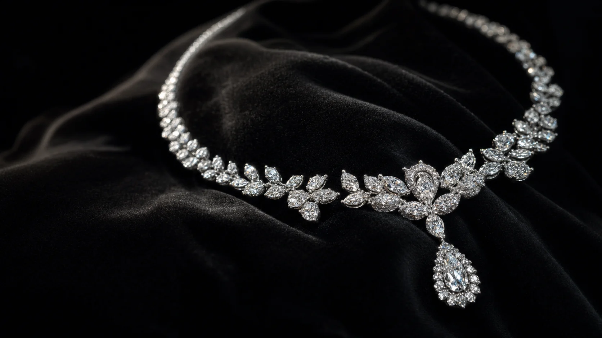

Beverly Hills · Since 2016
Chan Fine JewelryJewels by Judy Chan.
From her Beverly Hills studio, Judy designs modern heirlooms that carry the warmth of Singapore goldsmith tradition into a softer Los Angeles light.

Judy Chan · Designer studio
Jewels made to become personal history.
Judy designs sculpted diamond and colored-stone pieces for clients who want refinement with intimacy. Each work balances restrained Eastern detail with confident contemporary proportion.
Raised around her father's gold shop in Singapore, she brings a workbench eye to every commission: traceable materials, hand-finished surfaces, and pieces that feel alive on the body.
Chan Fine JewelryPrivate appointments on Wilshire
Selected works
Three signatures
Engagement, evening, and heirloom commissions from Judy's Beverly Hills studio.
Blue Passage Pendant
Pearl Orbit Drops
Studio belief
"A jewel should hold a story before it catches the light."
Bespoke in Beverly Hills
Start with a stone, a memory, or a promise.
Judy's team guides private clients from consultation and sketch through 3D confirmation, hand making, and delivery.